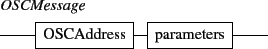

Next:
2. ITL messages
Up:
1. General format
Previous:
1. General format
Contents
Index
1.1 Address space
Here is a description of the OSC address space, including static and dynamic nodes and the corresponding messages.

Grame
-
Interlude project
[ANR-08-CORD-010]